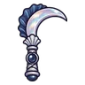

ประตูน้ำเก่า
ดูบนแผนที่และวิธีไป วางแผนฟาร์ม
ชั้นล่างในเมืองหอระฆัง · Lv 74–86
ชั้นล่าง / ดันเจี้ยน
เดินต่อไป
มอนในแมพ (7)
| มอน | Lv | ธาตุ | โซน |
|---|---|---|---|
| 74–81 | พิษ | ||
| ลูกน้องแคนเดิล | 76–86 | ไฟ | |
| 74–84 | น้ำ | เฟืองยักษ์ประตูน้ำ | |
| 76–86 | ดิน | เฟืองยักษ์ประตูน้ำ | |
| 76–86 | ดิน | ||
| 76–86 | มืด | เฟืองยักษ์ประตูน้ำ | |
| 88–88 | มืด |
อุปกรณ์ที่ดรอปในแมพนี้
| ของ | โอกาสสูงสุด |
|---|---|
| 0.5% | |
| 0.5% | |
| 0.25% | |
| 0.25% | |
| 0.25% | |
 เคียวคู่หอยมุก | 0.25% |
| 0.25% | |
| 0.25% | |
| 0.25% | |
| ชุดนักบินฟากฟ้า | 0.15% |
| เกราะคริสตัลถ้ำ | 0.15% |
| 0.12% | |
| 0.12% | |
| 0.12% | |
| 0.12% |